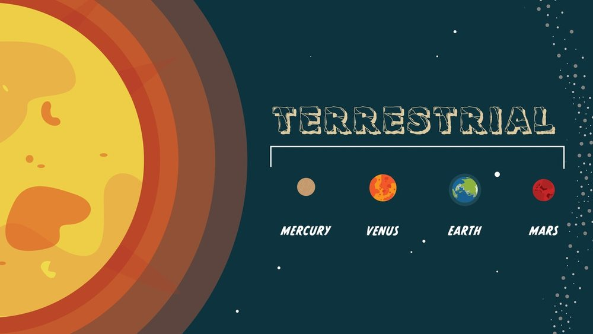
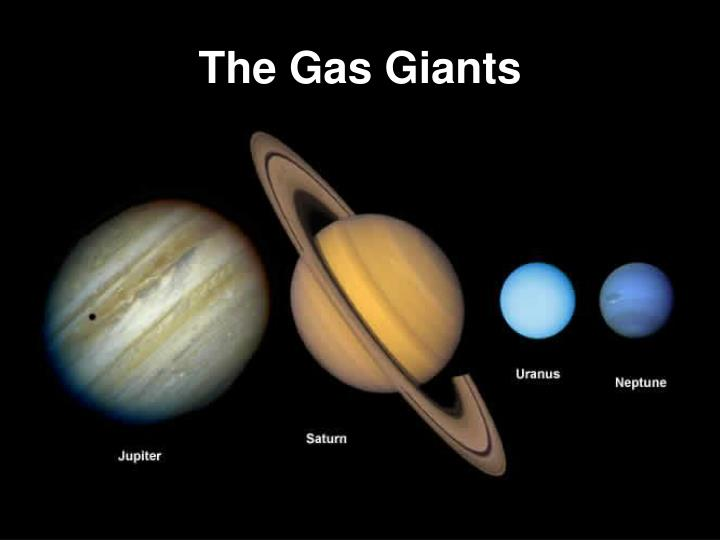
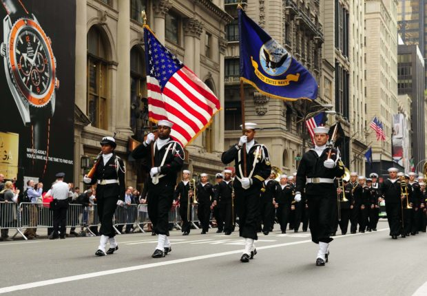

The Solar System

Terrestrial Planets
The Solar System consists of the Sun and the astronomical objects gravitationally bound in orbit around it, all of which formed from the collapse of a giant molecular cloud approximately 4.6 billion years ago.The four inner or terrestrial planets have dense, rocky compositions, few or no moons, and no ring systems. They are composed largely from refractory minerals, such as the silicates, which form their crusts and metals such as iron and nickel, which form their cores.
3 of 4 inner planets (Venus, Earth and Mars) have atmospheres substantial enough to generate weatherl all have impact craters and tectonic surface features such as rift valleys and volcanoes. The term inner planet should not be confused with inferior planet, which designates those planets that are closer to the Sun than Earth is (i.e. Mercury and Venus).

Terrestrial Planets - Details
Mercury
Mercury (0.4 AU from the Sun) is the closest planet to the Sun and the smallest planet in the Solar System (0.055 Earth masses).Mercury has no natural satellites, and its only known geologicalfeatures besides impact craters are lobed ridges or rupes, probably produced by a period of contraction early in its history. Mercury's almost negligible atmosphere consists of atoms blasted off its surface by the solar wind.
Its relatively large iron core and thin mantle have not yet been adequately explained. Hypotheses include that its outer layers were stripped off by a giant impact, and that it was prevented from fully accreting by the youn Sun's energy.

Terrestrial Planets - Details
Venus
Venus (0.7 AU from the Sun) is the close in size to Earth, has a thick silicate mantle around an iron core, a substantial atmosphere and evidence of internal geological activity.However it is much direr than Earth and its atmosphere is ninety times as dense. Venus has no natural satellites. It is the hottenst planet, with the surface temperatures over 400 degree Celsius, most likely due to the amount of greenhouse gases in the atmosphere.
No definitive evidence of current geological activity has been detected on Veus, but it has no magnetic field that would prevent depletion of its substantial atmosphere, which suggests that its atmosphere is regularly replenished by volcanic eruptions.

Terrestrial Planets - Details
Earth
Earth (1 AU from the Sun) is the largest and densest of the inner planets, the only one known to have current geological activity, and it is the only place in the Solar System where life is known to exist.Its liquid hydrosphere is unique among the terrestrial planets, and it is also the only planet where plate tectonics has been observed.
Earth's atmosphere is radically different from those of the other planets, having been altered by the presence of life to contain 21% free oxygen. It has one natural satellite, the Moon, the only large satellite of a terrestrial planet in the Solar System.

Terrestrial Planets - Details
Mars
Mars (1.5 AU from the Sun) is smaller than Earth and Venus (0.107 Earth masses).It possesses an atmosphere of mostly carbon dioxide with a surface pressure of 6.1 millibars (roughly 0.6 percent that of the Earth's).
Its surface, peppered with vast volcanoes such as Olympus Mons and rift valleys such as Valleys Marineris, show geological activitity that may have persisted until as recently as 2 million years ago.
its red colour comes from iron oxide (rust) in its soil. Mars has two tiny natural satellites (Delmos and Phobos) thought to be captured asteroids.

Outer Planets / Gas Giants
The four outer planets, or gas giants (sometimes called Jovian planets), collectively make up 99 percent of the mass known to orbit the Sun. Jupiter and Saturn are each many tens of times the mass of the Earth and consist overwhelmingly of hydrogen and helium; Uranus and Neptune are far less massive (<20 Earth masses) and possesses more ices in their makeup.Columbus Day
Background
Christopher Columbus
Christopher Columbus was born in October 1451 and died at the age of 55. He was an explorer, navigator, and colonizer, raised in the Republic of Genoa, in present day northwestern Italy.He studied astronomy, mathematics, navigation and cartography, and believed that he could change the world.

History
The Journey
At the end of the 15th century, it was practically infeasible to travel from Europe to Asia by land. To solve that problem Portuguese explorers took the sea route. It ran along the West African coast and around the cape of Good Hope. Columbus came up with a completely different idea: instead of sailing around the African continent, why not sail west across the Atlantic ocean.Spanish rulers, motivated by the quest for treasure supported Columbus's pursuit and funded his voyage. However, Columbus assumed incorrectly. He thought that the circunference of the Earth was much smaller than it really was.
History
The Journey (cont.)
On October 12, 1492, the ships landed not in Asia, as Columbus initially believed, but on one of the Bahamian islands.Searching for "pearls, precious stones, gold, silver, spices, and other objects and merchandise whatsoever," Columbus continued sailing to different Caribbean islands for months. After not finding the sought after treasure he returned to Spain in March 1493. Though Christopher Columbus was not the first to visit the "New World" and did not "discover" the Americas, his journey inspired further exploration of the American continents.

Present
Columbus Day Celebration
Even though Columbus Day became officially a federal holiday only in 1937, Columbus' voyage has been celebrated since the colonial period.In 1892, President Benhamin Harrison decreed to mark the 400th anniversary of Columbus' landing in the "New World" with pariotic festivities, writing...
"On that day let the people, so far as possible, cease from toil and devote themselves to such exercises as may best express honor to the discoverer and their appreciation of the great achievements of the four completed centuries of American life"
Since 1971, this holiday is celebrated on the second Monday in October. Different parts of the United States celebrate Columbus Day in defferent ways. Most states celebrate it as an official state holiday, while others may not recognize it at all.
- San Francisco claims the nation's oldest continuously existing celebration with its Italian-American community's annual Columbus Day Parade, which was established by Nicola Larco in 1868.
- As in mainlain USA, Columbus Day is a legal holiday in the U.S. territories of Puerto Rico and US Virgin Isalnds. This day is celebrated as both Columbus Day and Puerto Rico Friendship Day.
- Virginia also celebrates two legal holidays on this day, Columbus Day and Yorktown Victory Day, which honors the final victory at the Siege of Yorktown in the Revolutionary War.
Present
Who doesn't celebrate Columbus Day?
Hawaii, Alaska, and South Dakota are the three U.S. states that do not recognize Columbus Day at all. However, Hawaii and South Dakota mark the day with as an alternative holiday or observance.- Hawaii celebrates Discoverers' Day, which commemorates the Polynesian discoverers of Hawaii on the same date, the second Monday of October.
- South Dakota celebrates the day as an official state holiday known as "Native Maerican Day", rather than Columbus Day.